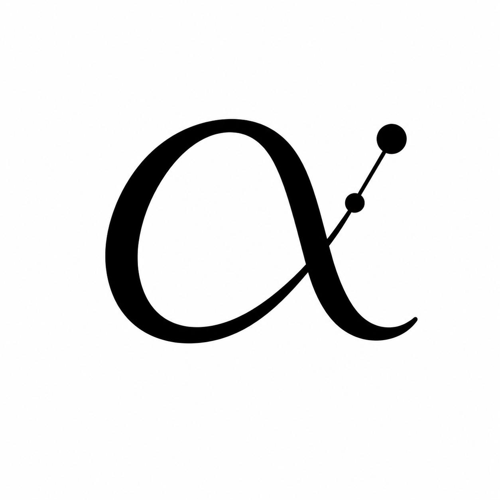

Project
Alphaneurals
Discovered from within.
Problem
Write the current Problem statement here — four or more lines describing the core problem Alphaneurals exists to solve. Intelligence, reasoning, and context get lost across tools, time, and people. Replace this with your own words describing the problem precisely and in plain language a technical reader can follow without prior context.
Earlier · May 2025
An earlier version of the Problem statement will appear here once you update the current one. This keeps a visible trail of how your thinking on the problem evolved over time.
Decisions
Write the current key Decisions here — four or more lines on the major technical and design choices made so far, and why. What was chosen, what was rejected, and the reasoning behind each. Replace this with your own words; this section is the strongest proof that the system is genuinely being built.
Earlier · May 2025
An earlier version of the Decisions will appear here once updated — showing how the design choices shifted as the system developed.
Architecture
Write the current Architecture here — four or more lines on how the system is structured. The Core (memory, context, retrieval) and the layers that sit on it: Myelin (storage intelligence), Learn (cognitive evolution), Arena (performance intelligence). Replace this with your own words describing how the pieces connect.
Earlier · May 2025
An earlier version of the Architecture will appear here once updated — showing how the structure evolved over time.
Status
Write the current Status here — four or more lines on what works today, what is in progress, and what is not built yet. Honest status is a strong trust signal. Replace this with your own words describing exactly where the system stands right now.
Earlier · May 2025
An earlier status snapshot will appear here once updated — building a visible record of progress over weeks and months.
Vision
Write the current Vision here — four or more lines on where this is heading. Alphaneurals as the infrastructure that ensures human and organizational intelligence is never lost, always connected, and forever compounding. Replace this with your own words.
Earlier · May 2025
An earlier version of the Vision will appear here once updated — showing how the long-term direction sharpened over time.